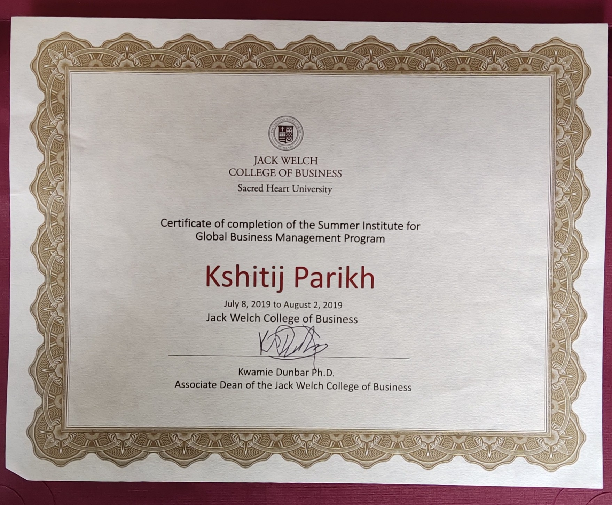
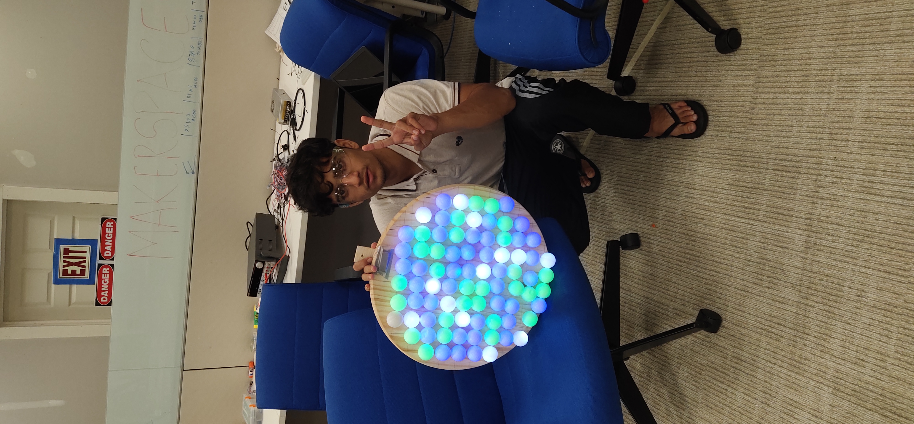
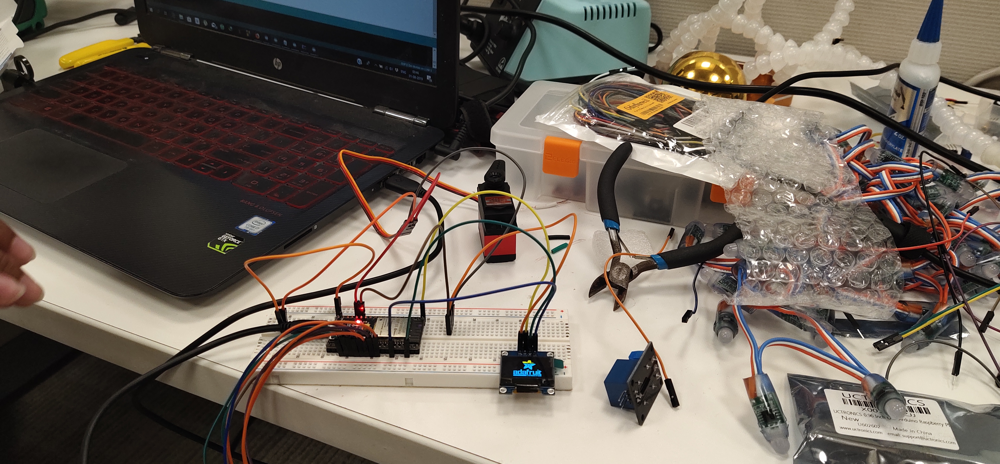
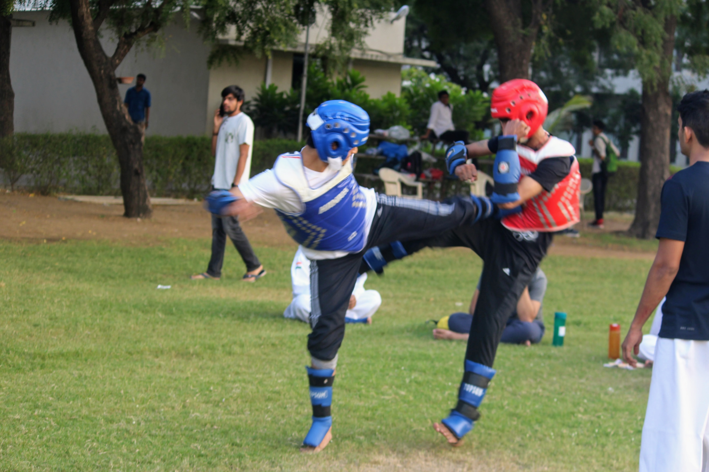
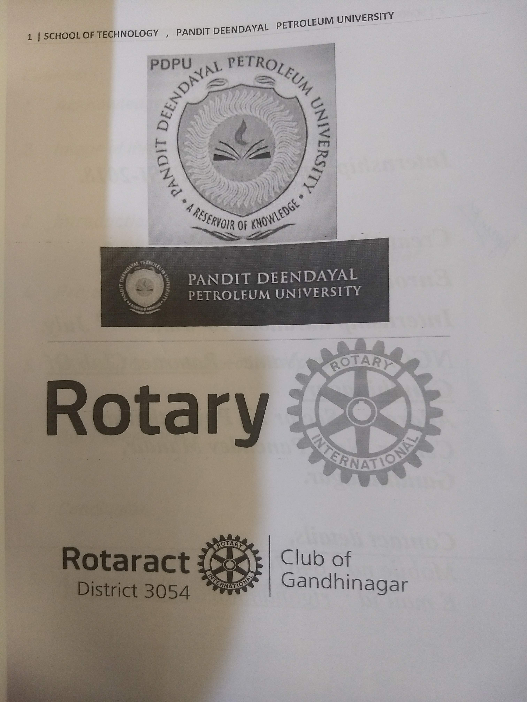

Beyond the Code
A look into my global experiences, physical discipline, and community involvement. These activities shape my perspective on global business, teamwork, and social impact.
Student Exchange Program
Sacred Heart University, Connecticut, USA
Participated in an immersive exchange program at Sacred Heart University, CT. The experience included visiting IBM in NYC to witness firsthand how IBM Watson impacts NGOs and the brewing industry.
I also toured Amazon Logistics and the New York Stock Exchange (NYSE), gaining invaluable insights into global business operations and high-scale logistics.
A technical highlight of the trip was programming an LED MoodLight that dynamically changes color based on real-time weather data. This global exposure significantly expanded both my technical skill set and my perspective on global tech innovation.



Taekwondo at College
Practicing Taekwondo during my college years instilled a deep sense of discipline, focus, and resilience. It taught me how to stay composed under pressure and maintain a consistent drive for self-improvement—traits that translate directly into my professional career.


Community Impact with Rotary Club
I actively volunteered with the Rotary Club to organize and execute a large-scale, free gut health checkup campaign for the local community.
By managing outreach and coordinating logistics on the ground, I successfully registered and mobilized 500 individuals for the medical drive. This grassroots experience deepened my empathy and understanding of diverse human needs—a user-centric mindset that deeply influences how I approach product strategy and analytics today.